Stride for Godot developers
Editor
The Stride editor is Game Studio. This is the equivalent of the Godot Editor.
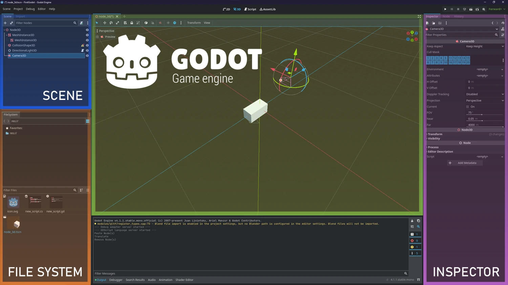
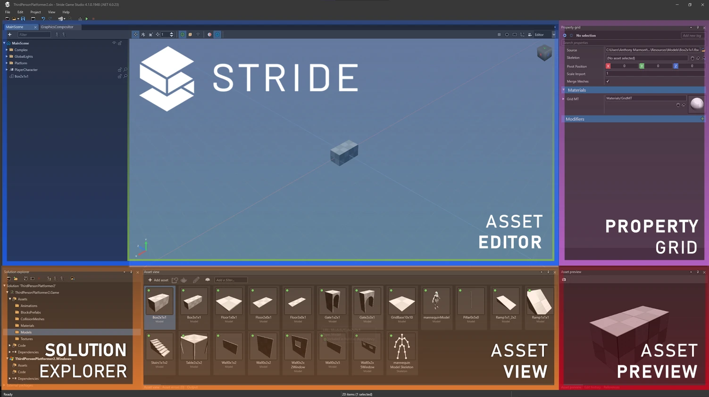
You can customize the Game Studio layout by dragging tabs, similar to Visual Studio.
For more information about Game Studio, see the Game Studio page.
Code Editor
Godot
Godot provides a built-in code editor that supports its own scripting language, GDScript, as well as C# and VisualScript. The Godot editor is more tightly integrated with the engine and is generally kept up-to-date with new features.
Stride
Stride comes with an integrated C# code editor within Game Studio. Although functional, this editor is not a high-priority feature and may not receive frequent updates. As such, it is generally recommended to use dedicated IDEs for code editing. Some popular choices include:
- Visual Studio Code: Free, open-source and highly extensible.
- Rider: Paid, but offers a robust set of features tailored for .NET development.
- Visual Studio Community: Free for small teams and individual developers.
- Visual Studio Professional and Enterprise: Paid versions with additional features and services.
In summary, while both Stride and Godot offer integrated code editors, Stride's editor is best considered a supplementary tool rather than a complete IDE. It is advised to use specialized IDEs for more complex development tasks in Stride. Godot's editor, on the other hand, is robust enough for full-scale development if you are using GDScript or C#.
Terminology
| Godot | Stride |
|---|---|
Scene (PackedScene) |
Prefab / scene asset |
| Inspector | Property Grid |
| FileSystem | Solution/Asset View |
| 2D/3D Viewport | Scene Editor |
| Node | Entity |
| Script attached to Node | Script component (SyncScript, AsyncScript, StartupScript) |
[Export] |
[DataMember] |
[GlobalClass] |
[DataContract] on serializable classes (to expose custom types in the editor) |
Folders and files
- Assets
- In Godot, you can store assets anywhere.
- In Stride, assets are stored in the
Assetsfolder.
- Stride and Godot use the standard C# solution structure. A key difference is that Stride uses a multi-project architecture with the following projects:
MyPackage.Gamecontains your source code.MyPackage.Platformcontains additional code for the platforms your project supports. Game Studio creates folders for each platform (for example,MyPackage.Windows,MyPackage.Linux, etc.). These folders are usually small and only contain the program entry point.- Any additional subprojects. Stride scans subprojects the same way it scans the main project to find
DataContractclasses and features for the editor and game.
- Bin contains the compiled binaries and data. Stride creates the folder when you build the project, with a subdirectory for each platform.
- obj contains cached files. Game Studio creates this folder when you build your project. To force a complete asset and code rebuild, delete this folder and build the project again.
- Resources is a suggested location for files such as images and audio used by your assets. Godot and Stride use different resource systems, so treat this as a project-organization folder rather than a Godot-style
Resourcetype.
Open the project directory from Game Studio
You can open the project directory from Project > Show in explorer in Game Studio.
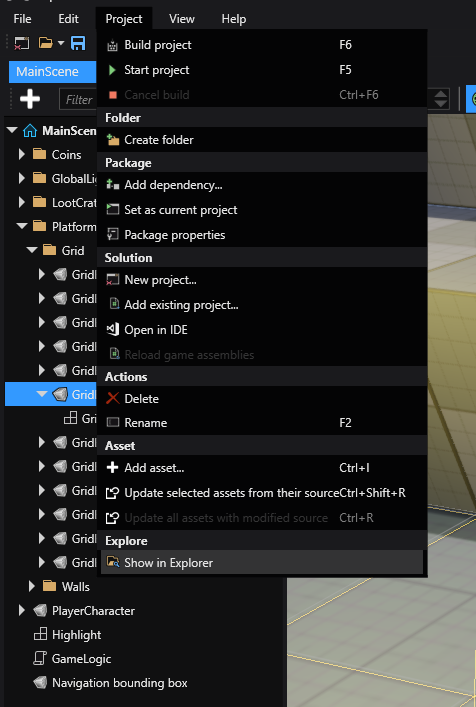
Game settings
Godot saves global settings in Project Settings.
Stride saves global settings in a single asset, the Game Settings asset. You can configure:
- The default scene
- Rendering settings
- Editor settings
- Texture settings
- Physics settings
- Overrides
To use the Game Settings asset, in the Asset View, select GameSettings and view its properties in the Property Grid.
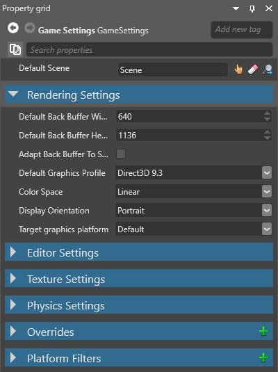
Scenes
Like Godot, in Stride you place all objects in a scene. Game Studio stores scenes as separate .sdscene assets in your project directory.
Set the default scene
You can have multiple scenes in your project. The scene that loads as soon as your game starts is called the Default Scene.
To set the default scene:
In the GameSettings properties, next to Default Scene, click
 (Select an asset).
(Select an asset).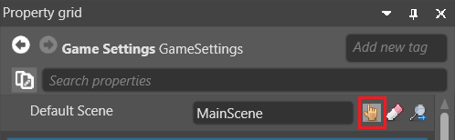
The Select an asset window opens.
Select the default scene and click OK.
For more information about scenes, see Scenes.
Entities vs Nodes
In Godot, objects in the scene are called Nodes (organized in the Scene Tree). In Stride, they're called entities.
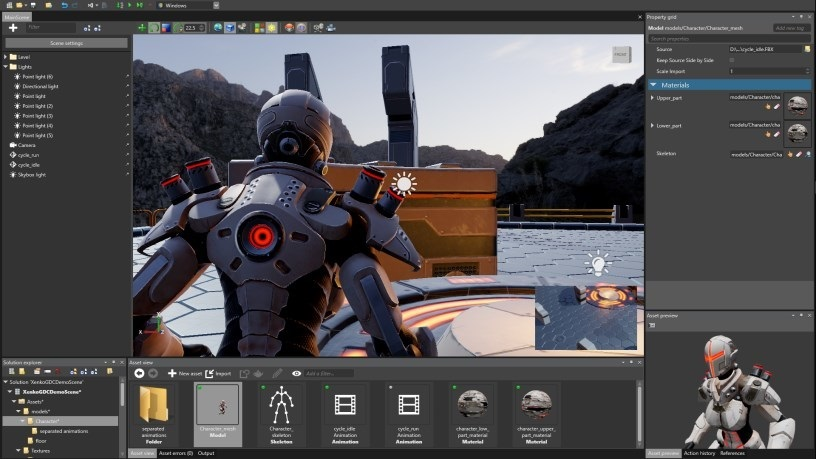
Like Nodes, entities are carriers for "behavior" and data. In Godot, this is typically done by using different node types (for example, Node3D, Sprite2D, AudioStreamPlayer) and attaching scripts. In Stride, this is done by adding components (transform components, model components, audio components, and so on). If you're used to working with Nodes in Godot, you should have no problem using entities in Game Studio.
Entity components
In Stride, you add components to entities in the editor much like you attach child nodes or configure node properties in the Godot editor.
To add a component to an entity in Game Studio:
Select the entity you want to add the component to.
In the Property Grid (on the right by default), click Add component and select the component from the drop-down list.
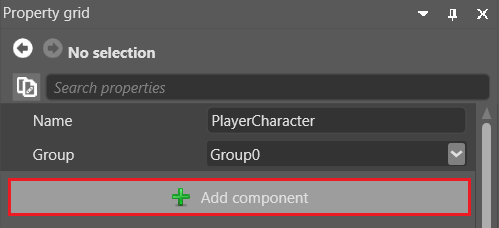
Transform component
Like Node3D / Node2D in Godot, each entity in Stride has a Transform component that sets its position, rotation, and scale in the world.
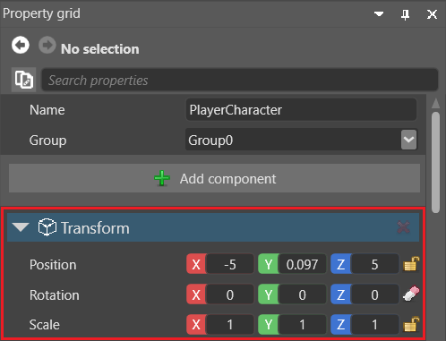
All entities are created with a Transform component by default.
In Stride, Transform components contain a LocalMatrix and a WorldMatrix that are updated every Update frame. If you need to force an update sooner, you can use TransformComponent.UpdateLocalMatrix(), Transform.UpdateWorldMatrix(), or Transform.UpdateLocalFromWorld(), depending on how you need to update the matrix.
Local Position/Rotation/Scale
Stride uses position, rotation, and scale to refer to the local position, rotation, and scale.
| Godot (typical 3D) | Stride |
|---|---|
position |
Transform.Position |
quaternion / basis |
Transform.Rotation |
rotation_degrees |
Transform.RotationEulerXYZ |
scale |
Transform.Scale |
Tip
In Godot, Node3D.rotation is Euler angles in radians, and Godot also exposes convenience properties like rotation_degrees.
In order to get and set rotation using degrees use the utility methods MathUtil.DegreesToRadians and MathUtil.RadiansToDegrees with Transform.RotationEulerXYZ.
World Position/Rotation/Scale
In Godot, world-space transform values are typically accessed via global_* properties or global_transform. In comparison to Godot, many of the Transform component's properties related to its location in the world are accessed via Stride's WorldMatrix.
| Godot (4.x, Node3D) | Stride |
|---|---|
global_position / global_transform.origin |
Transform.WorldMatrix.TranslationVector |
global_rotation (Euler, radians) |
Decompose from Transform.WorldMatrix |
global_scale |
Decompose from Transform.WorldMatrix |
global_transform |
Transform.WorldMatrix |
global_transform.basis (rotation/scale/shear in global space) |
Use direction vectors and decomposition on Transform.WorldMatrix |
Decompose from global_transform / global_transform.basis (rotation/scale etc.) |
Transform.WorldMatrix.DecomposeXYZ(out Vector3 rotation) |
| Decompose translation/scale | Transform.WorldMatrix.Decompose(out Vector3 scale, out Vector3 translation) |
| Decompose translation/rotation/scale | Transform.WorldMatrix.Decompose(out Vector3 scale, out Quaternion rotation, out Vector3 translation) |
Note
WorldMatrix is only updated after the entire Update loop runs, which means that you may be reading outdated data if that object's or its parent's position changed between the previous frame and now.
To ensure you're reading the latest position and rotation, you should force the matrix to update by calling Transform.UpdateWorldMatrix() before reading from it.
Transform Directions
In Godot, direction vectors are commonly derived from the transform basis (for example using global_transform.basis). In Stride, the WorldMatrix exposes direction vectors directly. Note that those are matrix properties, so setting one of those is not enough to properly rotate the matrix.
| Godot (typical 3D) | Stride |
|---|---|
-global_transform.basis.z (forward in 3D) |
Transform.WorldMatrix.Forward |
global_transform.basis.z (backward in 3D) |
Transform.WorldMatrix.Backward |
global_transform.basis.x (right) |
Transform.WorldMatrix.Right |
-global_transform.basis.x (left) |
Transform.WorldMatrix.Left |
global_transform.basis.y (up) |
Transform.WorldMatrix.Up |
-global_transform.basis.y (down) |
Transform.WorldMatrix.Down |
Note
See the note in World Position/Rotation/Scale
Assets
Assets are imported and managed in the Asset View.
Resources
Godot uses dedicated Resource objects. Stride does not use the same resource-object model. In Stride, equivalent data is usually represented with assets, prefabs, and serializable classes ([DataContract] / [DataMember]) that you reference from entities and scripts.
For deeper details, see Godot Resource and Godot PackedScene.
Supported file formats
Like Godot, Stride supports file formats including:
| Asset type | Supported formats |
|---|---|
| Models, animations, skeletons | .dae, .3ds, .obj, .blend, .x, .md2, .md3, .dxf, .fbx |
| Sprites, textures, skyboxes | .dds, .jpg, .jpeg, .png, .gif, .bmp, .tga, .psd, .tif, .tiff |
| Audio | .wav, .mp3, .ogg, .aac, .aiff, .flac, .m4a, .wma, .mpc |
| Fonts | .ttf, .otf |
| Video | .mp4 |
For more information about assets, see Assets.
Prefab inheritance
The equivalent of Godot's inherited scene is archetypes. Archetypes are master assets that control the properties of assets you derive from them. Derived assets are useful when you want to create a "remixed" version of an asset. This is similar to prefabs.
For example, imagine we have three sphere entities that share a material asset named Metal. Now imagine we want to change the color of only one sphere, but keep its other properties the same. We could duplicate the material asset, change its color, and then apply the new asset to only one sphere. But if we later want to change a different property across all the spheres, we have to modify both assets. This is time-consuming and leaves room for mistakes.
The better approach is to derive a new asset from the archetype. The derived asset inherits properties from the archetype and lets you override individual properties where you need them. For example, we can derive the sphere's material asset and override its color. Then, if we change the gloss of the archetype, the gloss of all three spheres changes.
Object lifetime
In Godot, nodes are commonly removed with queue_free() / free(). In Stride, entities and components are removed from scenes/entities and then released by the .NET garbage collector when no longer referenced.
This enables patterns such as removing an entity from one scene and adding it to another later, as long as references are preserved.
Input
In Stride, you can handle input through keystrokes, similar to Godot, or through virtual buttons, which is similar to Godot's input mapping.
public override void Update()
{
// true for one frame in which the space bar was pressed
if (Input.IsKeyDown(Keys.Space))
{
// Do something.
}
// true while this joystick button is down
if (Input.GameControllers[0].IsButtonDown(0))
{
// Do something.
}
float Horiz = (Input.IsKeyDown(Keys.Left) ? -1f : 0) + (Input.IsKeyDown(Keys.Right) ? 1f : 0);
float Vert = (Input.IsKeyDown(Keys.Down) ? -1f : 0) + (Input.IsKeyDown(Keys.Up) ? 1f : 0);
//Do something else.
}
Time
| Godot | Stride |
|---|---|
delta in _Process(double delta) |
Game.UpdateTime.WarpElapsed.TotalSeconds |
delta in _PhysicsProcess(double delta) |
simTimeStep in SimulationUpdate(BepuSimulation simulation, float simTimeStep) |
Engine.time_scale |
Game.UpdateTime.Factor |
Physics
Both Stride and Godot offer comprehensive physics engines, but their approaches to handling collisions and physics-based interactions differ. Below is a comparison of their features and functionality.
Stride
In Stride, there are three main types of colliders:
- Static Colliders: Fixed in place and do not move, typically used for environment elements like walls or floors.
- Rigidbodies: Dynamic colliders that are subject to physics simulations, such as gravity or force.
- Characters: Special colliders designed to work with character controllers.
In Stride, collision handling is done through physics components and script logic that handle collision events and triggers. For details, see Physics, Triggers, and Physics Queries.
Godot
In Godot, you can use a signal-based system to react to collisions. Signals are emitted when specific events occur, such as two objects colliding, and you can connect these signals to custom methods to execute your own logic.
Scripts
Different approaches to scripting
In Stride, there are three types of scripts, offering a different paradigm compared to Godot. While Godot requires you to inherit from a specific class to create a node of that type, Stride allows you to extend entities by adding scripts and then searching for specific entities to interact with.
Extending entities in Stride
For example, instead of inheriting from CharacterBody3D in Godot, in Stride you would attach a CharacterComponent to an entity. Don't forget to also attach a collision shape to make it interactable. In your scripts, you can then search for these components to manipulate them.
Stride example
// Example of searching for a CharacterComponent in Stride
public class MyScript : StartupScript
{
public override void Start()
{
var characterComponent = Entity.Get<CharacterComponent>();
if (characterComponent != null)
{
// Perform actions on characterComponent
}
}
}
Delegation over inheritance
This approach in Stride embodies the principle of "Delegation over Inheritance", providing you with greater flexibility when designing your game's architecture.
StartupScript
StartupScript.Start() is closest to Godot's _Ready() in terms of initialization flow, but they are not lifecycle-identical in every engine detail. In Godot, _Ready() runs when a node enters the scene tree, and parent nodes typically become ready before their children. In Stride, StartupScript.Start() runs when the script is started after the scene or entity is initialized, and the exact parent-child start order might not match Godot's. In practice, use StartupScript for initialization and setup tasks.
Stride example
public class BasicMethods : StartupScript
{
// Public member fields and properties that will be visible in Game Studio
public override void Start()
{
// Initialization code for the script
}
public override void Cancel()
{
// Cleanup code for the script
}
}
Godot example
public class BasicMethods : Node
{
// This method is equivalent to Stride's Start in StartupScript
public override void _Ready()
{
// Initialization code for the script
}
// Godot doesn't have a direct equivalent to Stride's Cancel,
// but you could use _ExitTree for cleanup
public override void _ExitTree()
{
// Cleanup code for the script
}
}
SyncScript
Both Stride and Godot offer methods that are repeatedly called for game updates. In Stride, this method is called Update() and is part of the SyncScript class. In Godot, the equivalent is _Process(double delta).
Key Differences
- Delta Time: Stride's
Update()does not include a delta time parameter. In contrast, Godot provides the time since the last frame as an argument (delta) in_Process(double delta). - Access to Delta Time: In Stride, you can still access the delta time through the Game property,
using Game.UpdateTime.Elapsed.TotalSeconds.
Stride example
public class BasicMethods : SyncScript
{
public override void Start() { }
public override void Cancel() { }
public override void Update()
{
// Access delta time in Stride
double deltaTime = Game.UpdateTime.Elapsed.TotalSeconds;
// Perform actions based on deltaTime
}
}
Godot example
public class BasicMethods : Node
{
public override void _Ready() { }
public override void _ExitTree() { }
public override void _Process(double delta)
{
// Perform actions based on delta
}
}
AsyncScript
Both Stride and Godot provide ways to run code asynchronously, but they use different approaches.
Stride example
Stride offers a specialized AsyncScript class that allows you to execute code asynchronously using C#'s async/await syntax. The Execute() method can be awaited, allowing your code to run without blocking the main game loop.
public class BasicMethods : AsyncScript
{
// Public member fields and properties will be visible in Game Studio
public override async Task Execute()
{
// The initialization code should come here, if necessary
// Loop until the game ends (optional depending on the script)
while (Game.IsRunning)
{
await MyEvent;
// Do some stuff
// Wait for the next frame (optional depending on the script)
await Script.NextFrame();
}
}
public override void Cancel()
{
// Cleanup code for the script
}
}
Godot example
Godot doesn't offer a dedicated AsyncScript class like Stride. However, you can still write asynchronous code in C# using the standard async/await syntax.
public class BasicMethods : Node
{
public async override void _Ready()
{
await ToSignal(GetTree().CreateTimer(1.0f), "timeout");
// Execute code after 1-second timer elapses
}
// Godot doesn't have a direct equivalent to Stride's Cancel method
public override void _ExitTree()
{
// Cleanup code for the script
}
}
In summary, both Stride and Godot offer mechanisms for running code asynchronously, but they achieve this in different ways. Stride provides a built-in AsyncScript class, whereas Godot allows for asynchronous code through standard C# mechanisms.
Script components
In both Stride and Godot, scripts are used to define behavior and logic for game entities. However, the way you attach and manage these scripts differs between the two engines.
Create a script
Stride
To create a script, click the Add asset button and select Scripts.
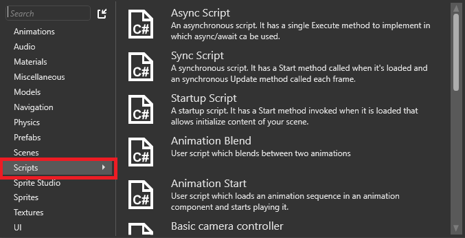
Stride has a SyncScript class that comes with methods such as:
SyncScript.Start()is called when the script is loaded.SyncScript.Update()is called every update.
If you want your script to be a startup or asynchronous, use the corresponding script types:
StartupScript: this script has a singleStartupScript.Start()method. It initializes the scene and its content at startup.AsyncScript: an asynchronous script with a single methodAsyncScript.Execute()and you can use async/await inside that method. Asynchronous scripts aren't loaded one by one like synchronous scripts. Instead, they're all loaded in parallel.
Godot
In Godot, you can either create a script from the editor or attach an existing script to a node via the Inspector.
In Godot, you use methods like _Ready() for initialization and _Process(delta) for frame-by-frame updates. Godot also supports the async/await syntax in C#.
Reload assemblies
Stride
After you create a script, you may have to reload the assemblies manually. To do this, click Reload assemblies in the Game Studio toolbar.
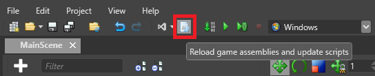
Godot
Godot automatically reloads scripts when they are saved, no manual reload is required.
Add scripts to entities
Stride
In the Entity Tree (on the left by default), or in the scene, select the entity you want to add the script to.
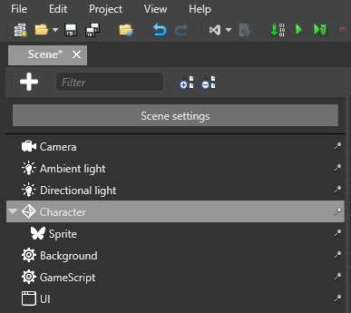
In the Property Grid (on the right by default), click Add component and select the script you want to add.
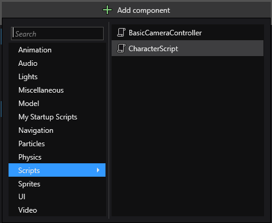
Godot
- Select the node in the Scene Tree.
- In the Inspector, click the Attach Script button or attach an existing script.
In Stride, scripts are listed alphabetically along with other components. In Godot, scripts are attached directly to nodes and appear as sub-resources in the Inspector.
For more information about adding scripts in Stride, see Use a script.
Instantiate prefabs
In Godot, the common equivalent is instantiating a PackedScene.
In Stride, you can instantiate entities using prefabs. However unlike Godot, a prefab in Stride can contain multiple entities at it's root, meaning that instantiating will return multiple entity instances.
In Stride, an entity can be instantiated like so:
// Public member fields and properties displayed in the Game Studio Property Grid
public Prefab CarPrefab;
public Vector3 SpawnPosition;
public Quaternion SpawnRotation;
public override void Start()
{
// Initialization of the script
List<Entity> carEntities = CarPrefab.Instantiate();
// Add the instantiated entities to the root scene
SceneSystem.SceneInstance.RootScene.Entities.AddRange(carEntities);
// Set the position and rotation for the first entity in the list
carEntities[0].Transform.Position = SpawnPosition;
carEntities[0].Transform.Rotation = SpawnRotation;
// Optionally, you can set a name for the entity
carEntities[0].Name = "MyNewEntity";
}
Serialization
Godot
In Godot C#, inspector-exposed members typically use [Export], and the script is commonly attached to a node type. Export support is tied to types the engine can serialize.
Stride
Stride takes a different approach, aiming for closer integration with C#.
Data Contract Attribute
To make your class serializable within Game Studio, add the [DataContract] attribute to your class. By default, all public members will be serialized.
[DataContract]
public class MyClass
{
public int MyProperty { get; set; }
}
Data Member Attribute
If you want to be explicit about what gets serialized, you can use the [DataMember] attribute. This is similar to Godot's [Export] attribute.
[DataContract]
public class MyClass
{
[DataMember]
public int MyProperty { get; set; }
}
Excluding members
To exclude a member from serialization, use the [DataMemberIgnore] attribute.
[DataContract]
public class MyClass
{
[DataMemberIgnore]
public int MyProperty { get; set; }
}
Collections and dictionaries
Stride supports ICollection and IDictionary classes for serialization. Note that only primitives and enums can be used as keys in dictionaries.
In Godot, you need to export Godot collections for them to be visible in the editor.
Nested serialization
You can serialize any class marked with [DataContract] into the editor, including abstract classes or interfaces. The Stride Editor will search for types that match the interfaces or abstract classes, making them eligible for serialization.
Log output
In Godot, you can print a message with GD.Print.
To view the log output, go to the Game Studio toolbar and click View, then enable the Output option.
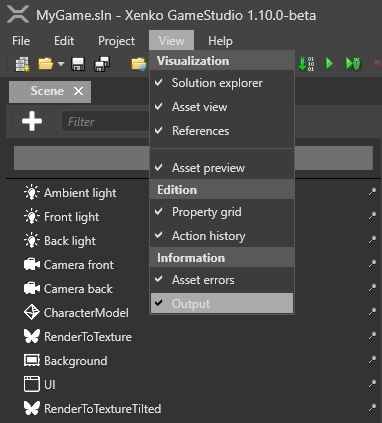
Once enabled, the Output tab will appear, typically located at the bottom of the Game Studio interface.
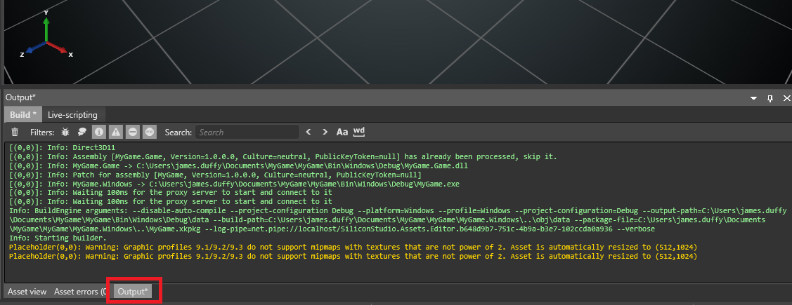
Print debug messages
Logging from a ScriptComponent:
public override void Start()
{
// Enables logging. It will also spawn a console window if no debuggers are attached.
// The argument dictates the kinds of message that will be filtered out, in this case, anything with less priority than warning won't show up
Log.ActivateLog(LogMessageType.Warning);
// Log this message to your console or IDE output window
Log.Warning("hello");
}
System.Diagnostics.Debug.WriteLine("hello");
Note
To print debug messages, you have to run the game from your IDE, not Game Studio. Running games cannot print to the Game Studio output window.